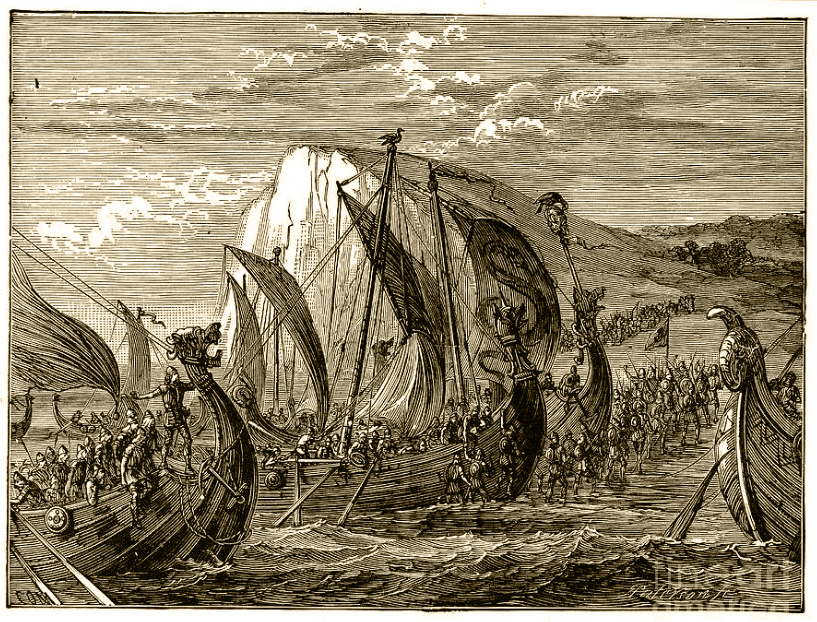

As a fearless warrior and fierce ruler as his father, Björn Ironside raided
and pillaged many places including France, Spain, Italy, England, Wales, cities
in Mediterranean Sea like Sicily and coasts of North Africa.
However, it should be noted that there is nothing in the accounts regarding the age
(comprised mostly of sagas and oral accounts) that suggest Rollo accompanied
Björn Ironside during these raids.
In fact, it is highly unlikely considering Bjorn Ironside is assumed to have died in
the year 859 exactly 1 year before the real-life Rollo was born.
Similar to Rollo, Floki probably was not there when Bjorn set sail to Mediterranean Sea.
Floki’s birth year is assumed to be 830 in the accounts and Bjorn Ironside would be a 53 year
old man by then considering Bjorn’s birth year is assumed to be 777.
According to historical accounts, Bjorn and Hastein
(who is assumed to be either one of Ragnar Lothbrok’s sons or someone Ragnar assigned to mentor Bjorn)
raided France and set sail into Mediterranean.
After raiding the coasts of Spain, they returned to pillage France more before and carried on to the city
of Pisa, Italy.
They could not progress more when they arrived at the gates of the city of Luna which they thought to
be Rome at first.
Eventually, conquering Luna became one of Bjorn Ironside’s most significant deeds.
He managed to capture the city using his intelligence, one of the aspects that made him one of
the most famous Vikings in the history.
How Bjorn Ironside Breached Luna’s Walls and Captured the City
Having difficulties breaching the walls of Luna, Bjorn had to think of a guileful way to
gain entry to the city. He sent his men to let the bishop of the city know that he died but he
converted to Christianity before he died and wanted to be buried on consecrated ground.
The city allowed his “body” to be brought in by a small group of guards
(who, according to some accounts, carried swords under their robes).
After entering the church, Bjorn came out of the box surprising everyone and fought his way to the city gates.
He then opened the gates to let his army in and captured Luna.
This trick Bjorn used was attributed to Hastein in some historical accounts and
it was shown as if Ragnar Lothbrok himself used this trick to enter Paris in the TV Series, Vikings.
After Luna, Bjorn and his Viking fleet raided Sicily and the coasts of North Africa.
On their way back home, they encountered navy forces of Al-Andalus at the Straits of Gibraltar.
This was an unfortunate encounter for Bjorn and his men as they were hit by a really powerful weapon
called Greek fire (an incendiary weapon which can continue to burn even on the surface of water